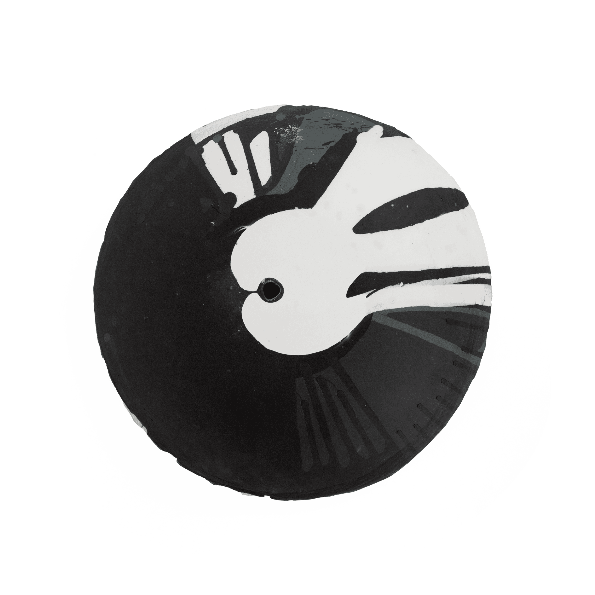
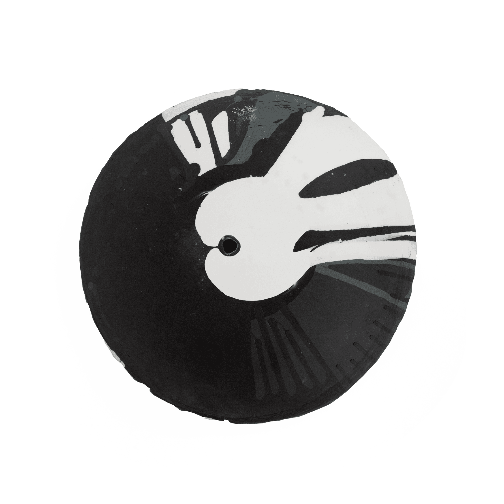

“Porcelain Rain” is an experimental project that explores the creative potential of the Kuka robotic system in shaping porcelain. The aim was to reimagine traditional porcelain crafting by transferring the intricate, skillful process from human hands to a robotic system. This approach replaces direct human intervention with autonomous programming, enabling the robot to independently create bowls.


 
